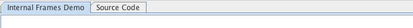

| S.No | Test | Scenario |
|---|---|---|
| 1 | Tabs within demos (tests table navigation, as well as textfield input) |
Continue tabbing to enter a demo's pane. When the top demo tabs have focus, the left and right arrow keys
move between tabs.  |
| Expected Result | ||
| Verify that the selected tab changes, e.g. between 'Internal Frame Demo' and "Source Code'. | ||
| Note: actual component appearence may vary depending on look and feel. | ||